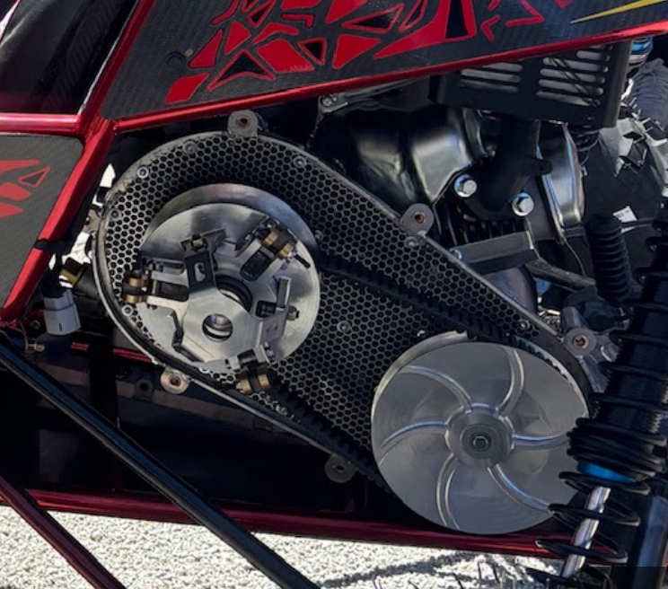
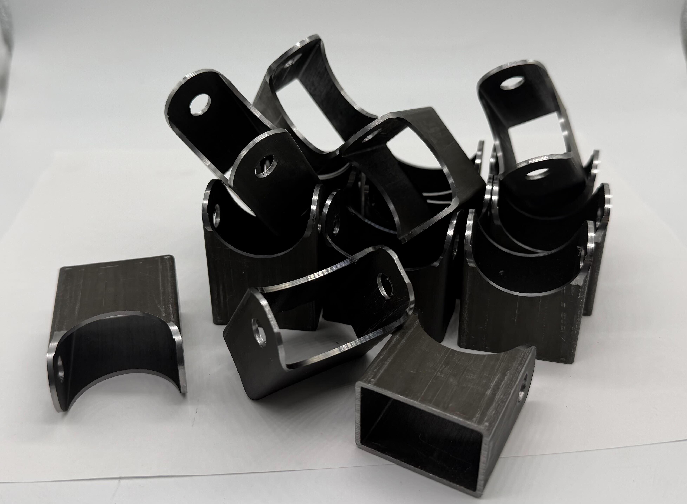

As part of my work in the Center for Additive Manufacturing and Logistics research lab and my role in Baja at NCSU, I created 5-axis toolpaths and operated a Haas UMC-500 machine to manufacture the secondary CVT sheaves and suspension tabs.

I wrote the CAM for the secondary sheaves of the CVT of the 2026 NCSU Baja vehicle.

I then operated the CAMAL Haas UMC-500 5-axis CNC mill to complete the manufacturing of the secondary CVT sheaves.

I also helped improve the tab manufacturing process by 5-axis machining the frame box tabs for suspension.

For the 2027 Baja car I will machine the third iteration of our CVT as well as the front axles redesign with the UMC-500.

Huge thanks to the CAMAL Research Lab for allowing NCSU Baja SAE to utilize their facilities!